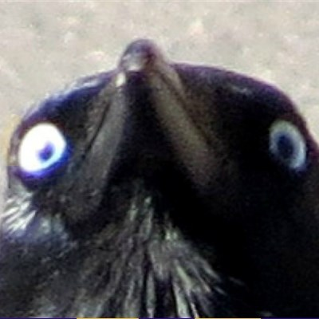

| Havran | Vrána | |
|---|---|---|
| Velikost: | 45 - 47 cm | 45 - 50 cm |
| Rozpětí křídel: | 81 - 94 cm | 90 - 100 cm |
| Váha | 200 - 625 g | 600 - 700 g |
| Zobák | šedohnědé zbarvený, neopeřený | zašpičatělý, černě tbarvený |
Havran polní:
Patří do řádu pěvců.
Tělo má porostlé tmavým peřím, které má v jasném slunečním světle charakteristický kovově modrý nádech.
Peří havranů má kovový lesk a nikdy se v něm nevyskytují šedé zóny. Na našem území žijí dva druhy vran, s havranem lze zaměnit jen vránu černou.
Velmi společenský. Velká hejna. Dospělý jedinec žije většinu roku samotářsky, přes zimu se obvykle sdružuje do větších hejn.
Mladí ptáci žijí v hejnech většinou po celý rok.Létá rychle a obratně, ke krouživému plachtění využívá termických proudů. Let je lehký; často je užíváno plachtění.
Vrána černá:
Patří do řádu pěvců.
Peří má černé s modrým leskem, černého zbarvení jsou také končetiny a silný, u kořene opeřený a na konci mírně zakřivéný zobák.
Obě pohlaví jsou zbarvená stejně,mladí ptáci mají hnědší zbarvení křídel.
V letu ji lze pak od ostatních odlišit díky téměř rovnému konci ocasu, který je u havrana polního jasně
zakulacený a u krkavce velkého klínovitý. Ozývá se drsný a hlasitým "krá", často opakovaným v řadě za sebou.
Vrána šedá:
Patří do řádu pěvců.
Vrána šedá je středně velký pták z čeledi krkavcovitých hojně rozšířený ve východní severní Evropě.
Vrána šedá je asi půl metru dlouhá s rozpětím křídel 95cm. Ve volné přírodě se u vran prokázalo využívání klacíků a řapíků listů, z nichž vyrábějí háčky.
Při pokusech dokázaly využívat umělé materiály, které nikdy a dříve neviděly
Tato schopnost se prokázala i při pokusech s mláďaty odchovanými v zajetí, která nepřišla
do kontaktu s rodiči
Bonus:
